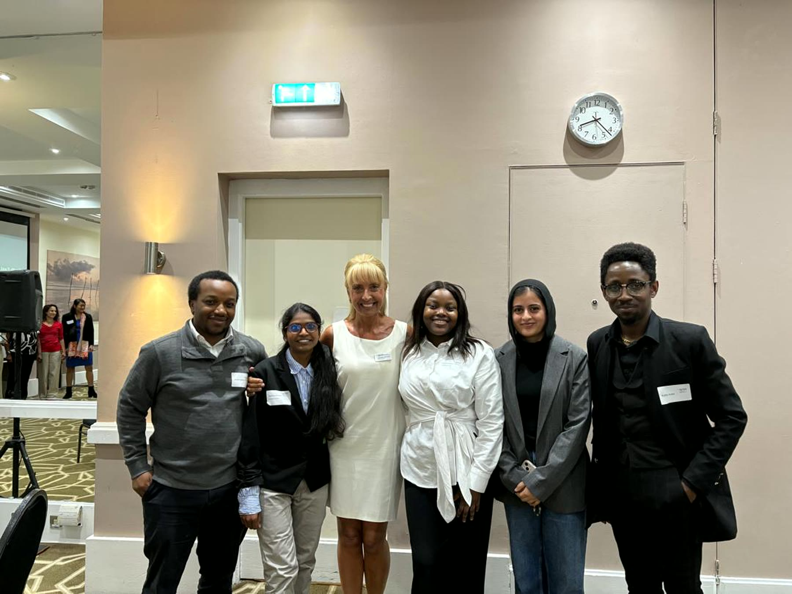
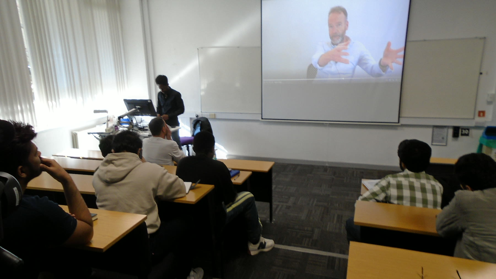
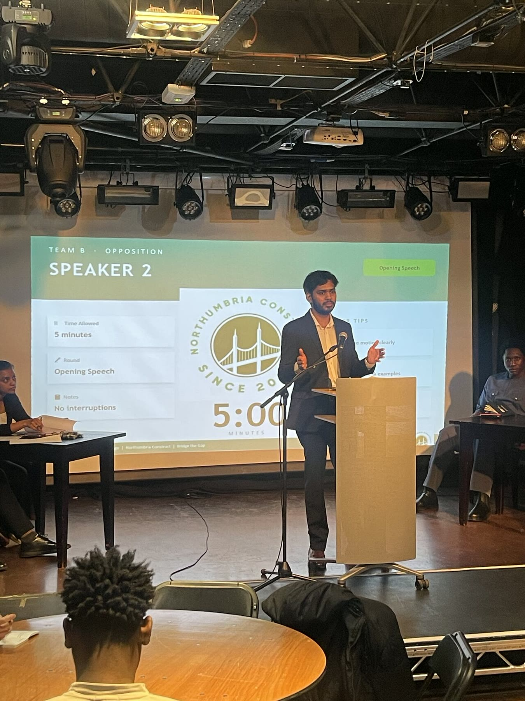
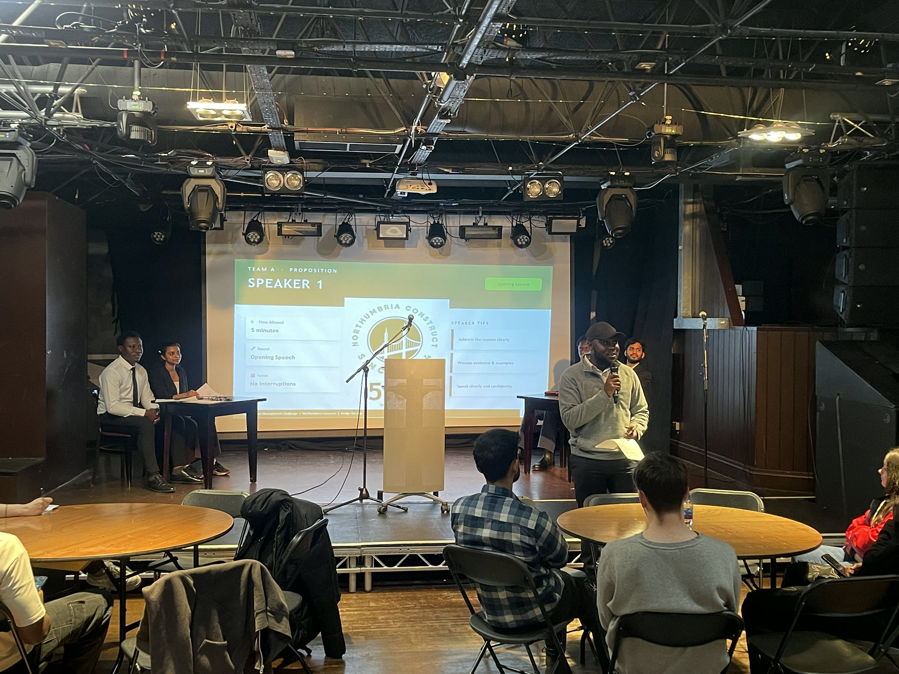
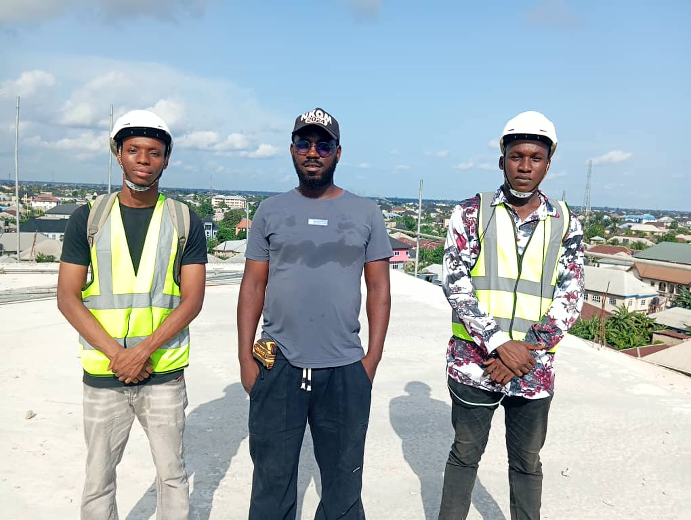
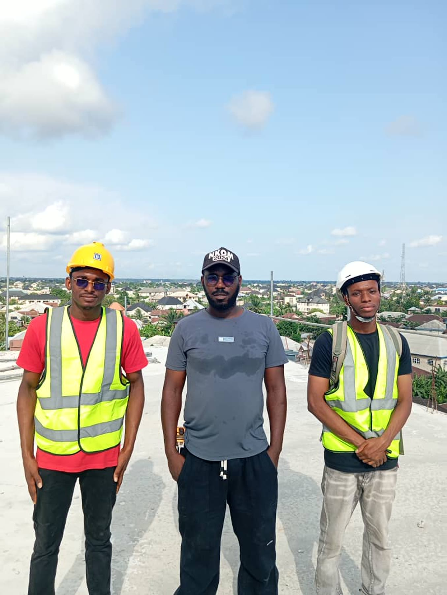
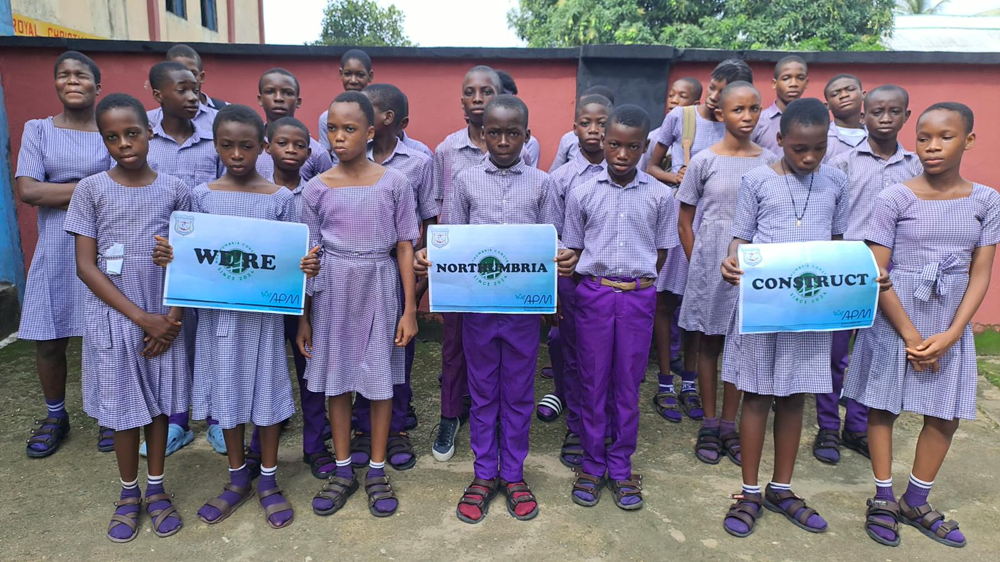

Creating projects with lasting professional impact.
Every initiative strengthens the relationship between academia and
industry while helping participants build knowledge, networks and
practical experience.
01
Flagship initiative
Bridge the Gap
The project that led to the creation of Northumbria Construct.

The Bridge the Gap project delivery team.
Project overview
Developed during the
Association for Project Management (APM) Project Management
Challenge, the project investigated why many students struggled to
engage effectively with the construction industry despite the
wealth of opportunities available through universities,
employers and professional institutions.
Using structured project management methodologies, the project
combined research, stakeholder engagement, industry interviews,
storytelling and educational outreach to better understand the
barriers preventing meaningful participation.
The findings demonstrated that the primary challenge was not the
absence of opportunity, but the lack of visibility,
understanding and accessibility.
Recognising that these challenges extended beyond the
competition itself, the project team transformed Bridge the Gap
into a continuing programme of professional engagement, leading to
the establishment of Northumbria Construct.
Key activities
Research and stakeholder surveys
Industry interviews and professional storytelling
Educational seminars and outreach activities
University, institution and industry collaboration
Innovative stakeholder engagement approaches
Transition planning for long-term sustainability
Project outcomes
Better understanding of engagement challenges
Evidence-based recommendations
Innovative engagement frameworks
A sustainable programme of professional engagement
Demonstrated benefit realisation through transition
Project delivery team collaboration (L-R: Takudzwua, Sobia, Kufre, Yemi, Vineeth)

First Bridge the Gap seminar at Northumbria University
Dialogue into action
Oxford-Style Debate
A structured debate that turned discussion into practical
recommendations and new opportunities.
Debate motion
“This House Believes that University Education Fails to Prepare
Students for Industry.”
Project overview
The project brought together participants, academics and industry
professionals to examine the responsibilities of universities,
individuals, employers and professional institutions in preparing
graduates for professional practice.
Audience feedback and recommendations were analysed and compiled
into a formal report presented to stakeholders within
Northumbria University Experiential Learning Team
and the Chartered Institute of Building (CIOB).
Recommendations included clearer communication around
opportunities and improved signposting of Personal Protective
Equipment availability for construction site visits. These
actions contributed to increased participation in
subsequent CIOB site visits.
Participants at the Northumbria Construct Oxford-Style Debate.
Objectives
Meaningful dialogue
Create collaboration, evaluate industry readiness and produce
evidence-based recommendations.
Activities
Structured engagement
Plan the debate, collect stakeholder feedback and present
findings to institutional partners.
Outcomes
Measurable benefits
Improved communication, better PPE signposting and increased
participation in CIOB site visits.
A first-time speaker takes the floor

An opposition speaker presents his case

The event was hosted by the President of Northumbria University Student Union Isaac Etonam Professional networking after the debate
Outcome of the Oxford-Style Debate
CIOB Site Visit
Recommendations from the debate included clearer communication
around professional opportunities and better signposting for
site-visit participation. The subsequent CIOB Site Visit put
those recommendations into practice by connecting Northumbria
Construct participants with a live construction environment.
Facilitated through the Chartered Institute of Building, the
visit provided practical exposure to project delivery, site
operations and discussion with industry professionals.
Northumbria Construct participantsSite walkthrough and discussion
International engagement
Connecting learning across borders.
Through our activities in Nigeria, we have extended professional
and educational engagement into project sites and schools.
Monty Suites project
Project site visit
Northumbria Construct participants gained exposure to a live
project environment during a visit to the Monty Suites
project.

Monty Suites project visit

Learning in a live project environment
Royal Christian High School
Outreach seminar
A Northumbria Construct seminar introduced students at Royal
Christian High School to construction, projects and future
professional possibilities.

Northumbria Construct seminar at Royal Christian High School
Our project philosophy
Together, we can be the bridge.
We measure success through stronger relationships, wider access to
opportunity and benefits that continue beyond each project.